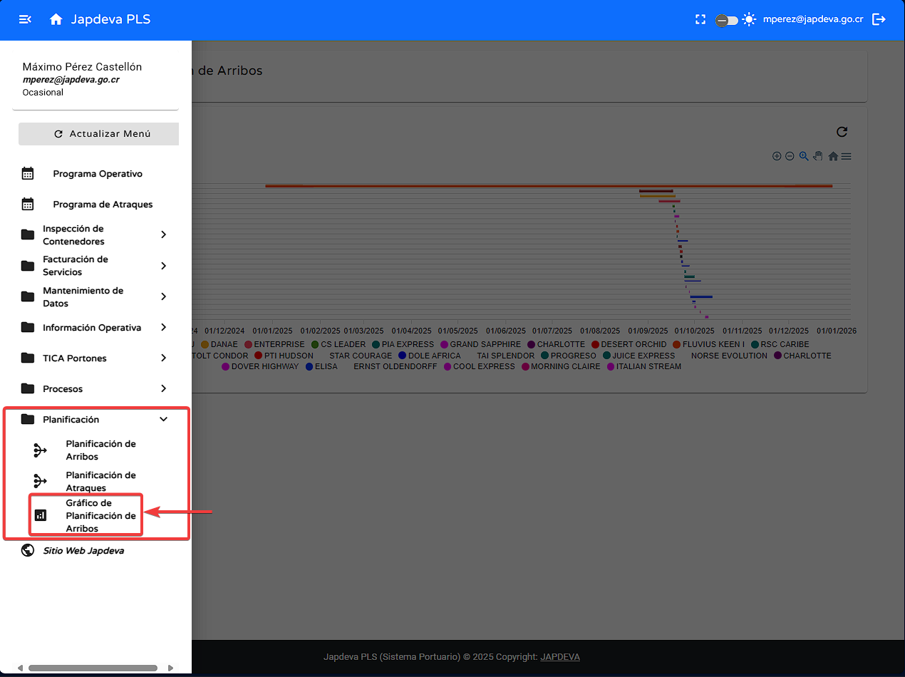

Bienvenido a la guía de usuario para la pantalla Gráfico de Planificación de Arribos del sistema PLS. Esta guía está diseñada para ayudarte a utilizar y comprender de forma sencilla y directa las funcionalidades que ofrece esta pantalla.
Ubicada dentro del submenú Planificación esta pantalla ofrece la posibilidad de visualizar de forma gráfica todos los arribos confirmados y registrados en el sistema a lo largo del año actual.
Para realizar la actualización de datos se debe seguir los siguientes pasos:
Para realizar las diversas funciones se deben de seguir las siguientes instrucciones:
Este apartado tiene diversas funcionalidades dentro del mismo por ende para poder manejarlos se debe realizar lo siguiente:
Para realizar esta función se debe hacer lo siguiente:
Para realizar esta función se debe hacer lo siguiente:
Para brindar una experiencia más confortable, se explicarán los diversos campos que se encuentran presentes en la pantalla.
Si necesitas ayuda adicional, contáctanos: